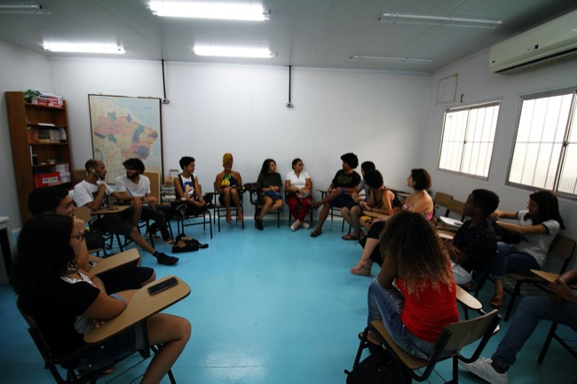
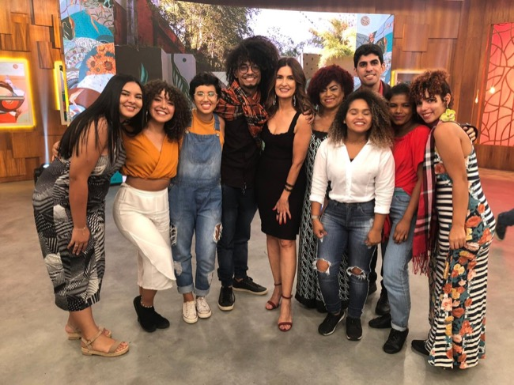
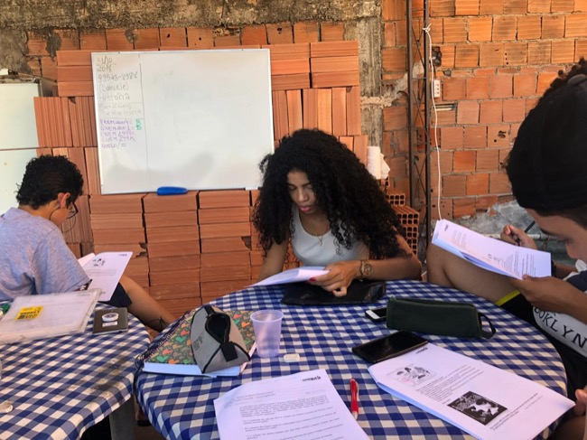
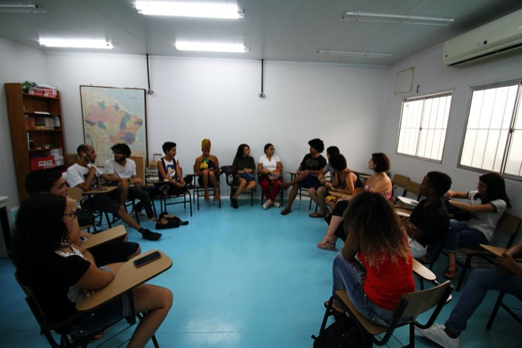
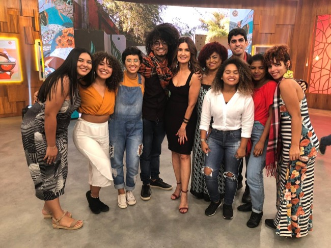
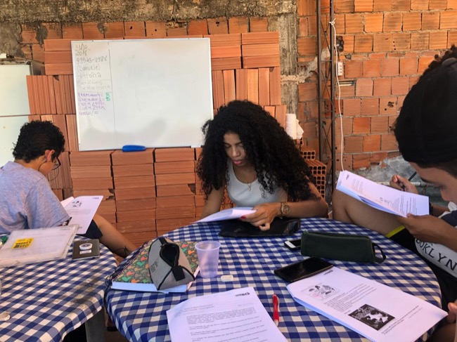
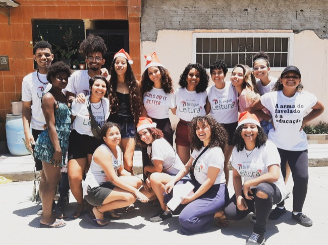
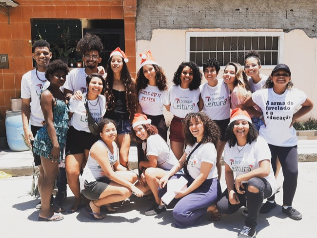

O UniFavela é um dos três cursos Pré-Vestibulares que atuam no complexo de favelas da
Maré, um conjunto composto por 17 favelas com um total de 140 mil habitantes. A
desproporção desses números é um dado revelador sobre a precarização de direitos
sociais, e os baixos índices de desenvolvimento social, na região.
Formado por jovens professores voluntários, a motivação essencial do projeto é a inserção
de jovens e adultos da Maré na universidade, corrigindo um déficit de formação universitária
de qualidade na população local. Por intermédio do Edital RUA 2019,
o UniFavela tornou-se um curso de extensão da UFRJ, tendo recebido menção honrosa.
O projeto teve que se adaptar a dificuldades de localização: começou a funcionar em junho de
2018 na Lona Cultural Hebert Vianna, desenvolveu por um período suas ações em uma laje na Favela
Nova Holanda, com capacidade de abrigar em média 15 estudantes, e atualmente funciona
no Instituto Vida Real.
Em 2018, o seu índice de aprovação foi de 100%!
Em 2020, já são mais de 200 inscritos!

 





 
